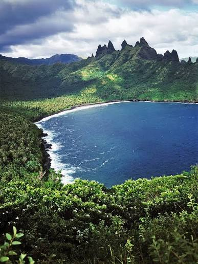

Marquesas Islands
The Marquesas Islands offer dramatic mountain scenery. Nuku Hiva and Hiva Oa are two islands in this archipelago. Today let's enjoy the mountains and the lagoon of Nuku Hiva.

Explore five archipelagos through island landscapes.
The Marquesas Islands offer dramatic mountain scenery. Nuku Hiva and Hiva Oa are two islands in this archipelago. Today let's enjoy the mountains and the lagoon of Nuku Hiva.
